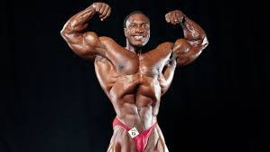
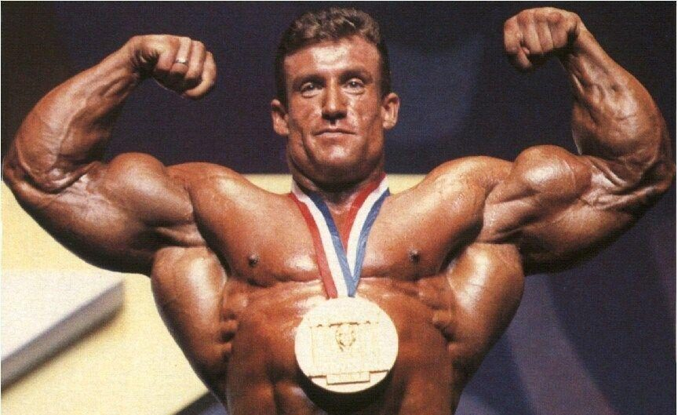

Arnold Schwarzenegger

Arnold Schwarzenegger is a seven-time Mr. Olympia champion and is widely regarded as the greatest bodybuilder of all time. He popularized bodybuilding and became a cultural icon through his acting career.
His victories in the Mr. Olympia competition spanned from 1970 to 1975, and again in 1980.
Lee Haney
Lee Haney holds the record for the most Mr. Olympia wins, with eight titles from 1984 to 1991. He is known for his incredible size and symmetry, setting a new standard in bodybuilding.
Haney emphasized the importance of health and fitness, promoting bodybuilding as a way of life.
Dorian Yates
Dorian Yates is a six-time Mr. Olympia champion known for his intense training style and massive physique. Competing from 1992 to 1997, he brought a new level of conditioning and size to the stage.
Yates is also recognized for his contributions to training techniques and nutrition in bodybuilding.